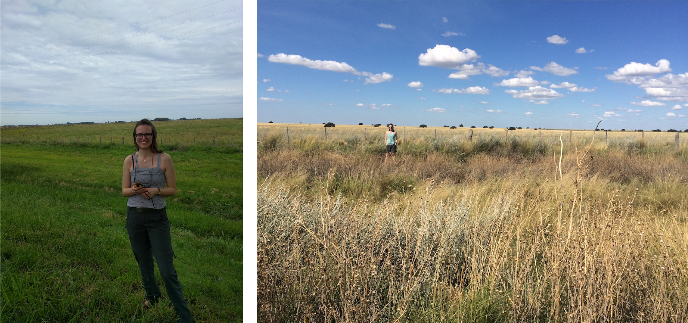

My name is Radost Stanimirova and I am a PhD Candidate at the Department of Earth and Environment at Boston University and a member of the Land Cover and Surface Climate Group.
I study climate variability and human transformation of the landscape, especially through agriculture. I use high performance computing, machine learning and time series analysis of remote sensing observations to characterize land use and land cover change.

For updates and more information follow me on Twitter , ResearchGate and Google Scholar.